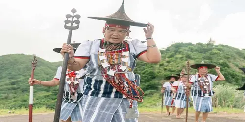
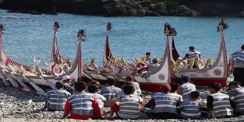
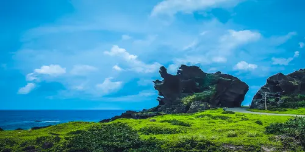
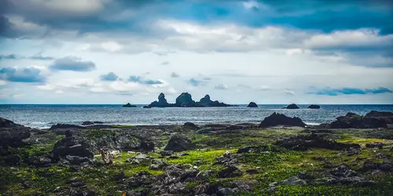
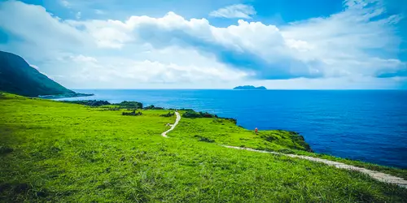
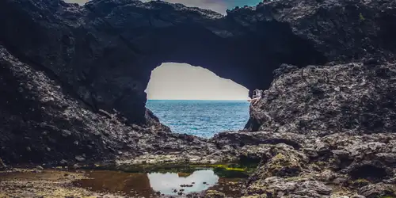
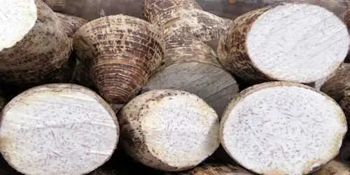

History and Culture

The People
The Tao (Yami) people are the Indigenous inhabitants of Orchid Island. Their culture is deeply connected to the sea, with traditions centered on fishing, seasonal rituals, and a lifestyle shaped by the island's environment. Isolation over the centuries helped them preserve their language, customs, and unique way of life.

The Boats
One of the most iconic symbols of Tao culture is the tatala, a beautifully crafted wooden fishing boat. Built by hand using traditional techniques, these boats feature curved shapes and symbolic red, white, and black designs. The tatala plays an important role in ceremonies and in the annual flying-fish season, reflecting the Tao's deep respect for the ocean.
Best Sightseeing Spots on the Island

Dragon Head Rock
This famous natural rock formation, shaped by volcanic rock, wind, and sea erosion, resembles a dragon head stretching into the ocean. A major landmark along Orchid Island's coastal road, it's often mistaken for a Korean attraction but is uniquely part of Lanyu's landscape. It highlights the island's volcanic beauty and is a great spot for photos and appreciating nature.

Battleship Rock
Off Orchid Island's northeast coast lies an uninhabited islet shaped like a battleship. Once the Dongqing tribe's traditional fishing grounds, it's now popular for snorkeling and photography. Local stories say it was mistaken for a real warship and shelled during World War II, making it one of Lanyu's iconic landmarks.

Green Green Grassland
Located at the southern tip of Orchid Island, this coral-reef plateau is known for its open grasslands, dramatic coastlines, and unique red soil. Wildflowers bloom in spring and summer, while autumn and winter bring golden grasses. It's a beautiful spot for sunset and ocean views.

Lover's Cave
located beside Nipple Mountain on Orchid Island, is a sea cave formed by erosion. Known for its dramatic opening and blue ocean view, it's a popular spot for photos and exploration. Often mistaken for the nearby Ghost Cave, it remains an iconic east-coast attraction—just watch the stairs and tides when entering.
Traditional cuisine

Flying-Fish
In Penghu, the resilient cactus symbolizes the island's hardy spirit. Its ripe fruit is naturally tangy and fragrant, inspiring unique local dishes like cactus ice, pink chive pockets, layered cakes, and cactus lattes. Discover the must-try cactus specialties of Penghu in one guide.

Taro
Penghu Brown Sugar Cake is a classic favorite among visitors. Made from pure brown sugar, it has a chewy texture and a sweet but not cloying taste, making it a popular choice for gifts or personal enjoyment.